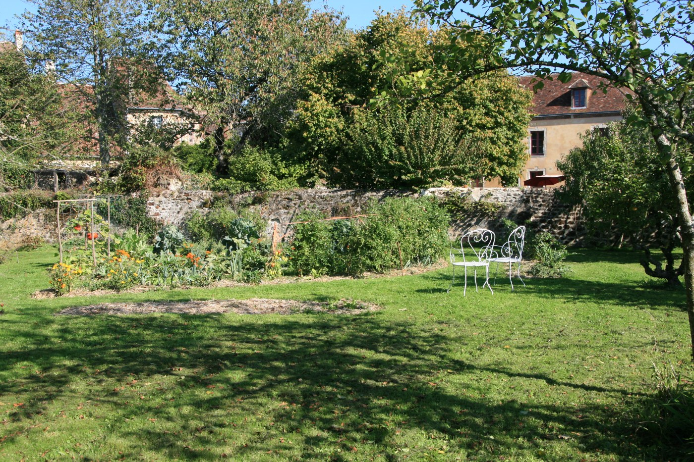
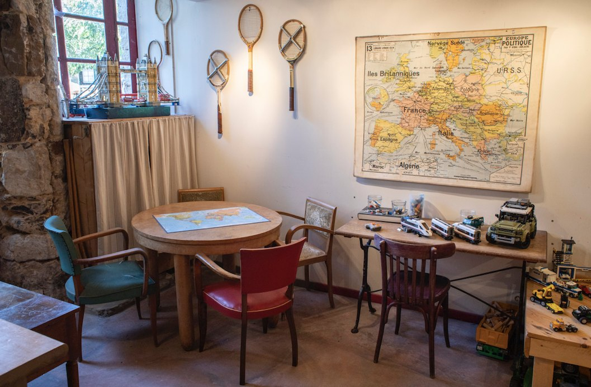

Pas de problème si la météo s'annonce capricieuse pendant votre séjour au Clos de la Fuie ! Dans le Perche, une multitude d'activités en intérieur vous attendent pour vous divertir en famille ou entre amis.
Découvrez dans cet article une sélection éclectique d'activités adaptées à tous les goûts et à tous les âges, même par temps maussade !
À l'abri dans les musées et les châteaux
- Visiter le château médiéval des Comtes du Perche à Nogent-le-Rotrou, avec son imposant donjon de pierre du XIe siècle, dominant la vallée de l'Huisne.
- Explorer le Manoir de Courboyer, érigé à la fin du XVe siècle, l'un des rares manoirs ouverts à la visite, abritant également la maison du Parc naturel régional du Perche.
- Découvrir le Manoir de Soisay, à 2 km du bourg, qui ouvre ses portes lors de l'événement Art à La Perrière, accueillant artistes contemporains, peintres, dessinateurs et sculpteurs.
- Plonger dans l'histoire rurale au travers de l'Écomusée du Perche à Saint-Cyr-la-Rosière, situé sur le site du Prieuré de Sainte-Gauburge, retraçant la vie quotidienne du XIXe siècle aux années 1960.
- Découvrir les Muséales de Tourouvre, un site captivant abritant deux musées uniques : le Musée de l'Émigration française au Canada, qui plonge dans l'histoire émouvante de ceux qui ont quitté leur terre natale au XVIIe siècle, et le Musée des Commerces et des Marques, qui parcourt deux siècles de consommation, de l'époque du panier au règne du caddie.


Une pause gourmande ou un moment de détente
- Profitez de l'ambiance conviviale du bar et salon de thé de la brocante la Guinguette de Bellême pour une partie de ping-pong, de billard ou de baby-foot.
- Savourez un moment de plaisir à La Maison d'Horbé à La Perrière, entre salon de thé et brocante.
- Plongez dans un univers hors du temps dans les dépendances d'un ancien prieuré du XVIIe siècle, au salon de thé de Chez Nous en campagne à Tourouvre-en-Perche, mêlant brocante, créations et accessoires déco ou mode.
Les délices du terroir percheron
- Flânez à la halle de Margon au Marché des producteurs, qui propose des produits locaux de qualité le vendredi après-midi.
- Visitez la Cidrerie Traditionnelle du Perche au Theil, à 20 min du Clos de la Fuie, et découvrez les différentes facettes du cidre et de ses dérivés.
Se réfugier au cinéma
Le cinéma associatif de Mamers, à 8 km de La Perrière, propose une sélection toujours intéressante, avec beaucoup de films présentés en version originale.
Nager ou barboter
Une séance de natation à la piscine couverte municipale de Mamers — nous adorons y faire nos longueurs, souvent seuls dans les lignes ! Ou encore au complexe aquatique d'Aquaval à Nogent-le-Rotrou, avec son bassin de natation de 25 m (50 m l'été), son espace balnéo-ludique et son toboggan.
Et au Clos de la Fuie même…
- Plongez dans un monde de lecture avec notre vaste sélection de livres et de bandes dessinées, dispersés dans toutes les pièces de la maison, et dévorez les pages dans la chaleur enveloppante du poêle à bois.
- Pour des moments de convivialité, ouvrez le placard de la bibliothèque, où vous trouverez une variété de jeux de société et de puzzles à partager en famille ou entre amis.
- Dans notre salle de jeux, découvrez un coin de détente équipé d'un piano, d'un jeu de fléchettes et même d'un billard indien — voici les règles du carrom.


Quel que soit le temps dehors, vous trouverez toujours une activité captivante à partager ensemble à l'intérieur !